ProgTest lave linge B7S
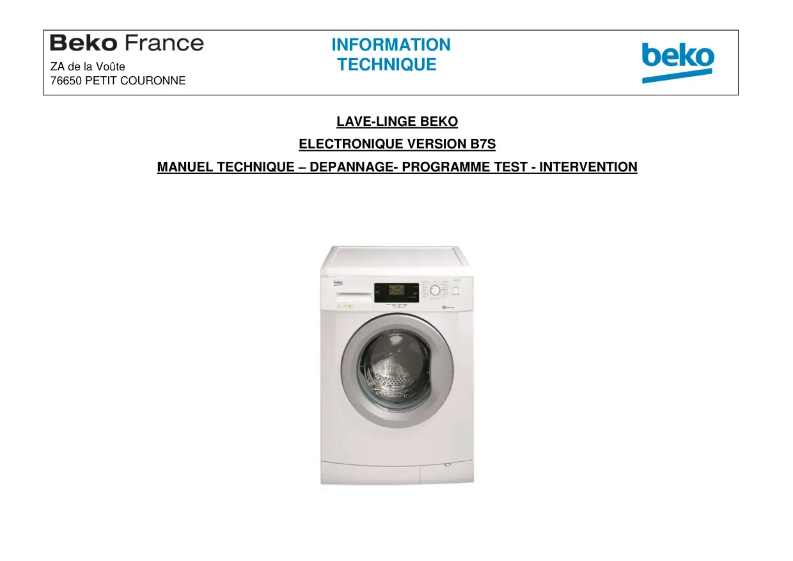
LAVE-LINGE BEKOELECTRONIQUE VERSION B7SMANUEL TECHNIQUE – DEPANNAGE- PROGRAMME TEST - INTERVENTIONINFORMATIONZA de la Voûte TECHNIQUE76650 PETIT COURONNE
1 / 27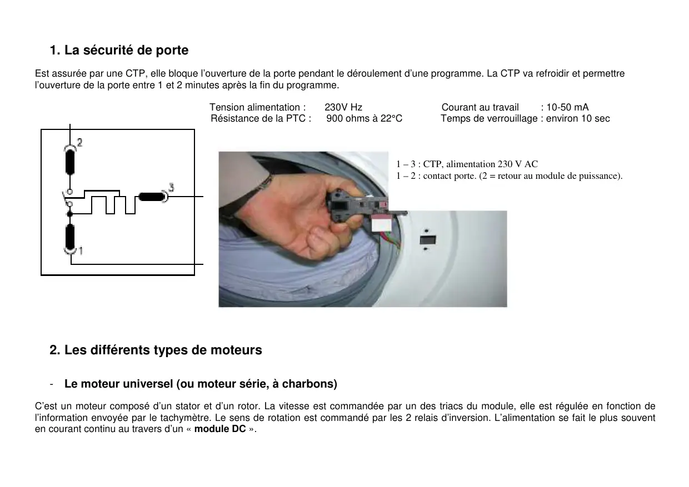
1. La sécurité de porteEst assurée par une CTP, elle bloque l’ouverture de la porte pendant le déroulement d’une programme. La CTP va refroidir et permettrel’ouverture de la porte entre 1 et 2 minutes après la fin du programme.Tension alimentation : 230V HzCourant au travail : 10-50 mARésistance de la PTC :900 ohms à 22°CTemps de verrouillage : environ 10 sec2. Les différents types de moteurs- Le moteur universel (ou moteur série, à charbons)C’est un moteur composé d’un stator et d’un rotor. La vitesse est commandée par un des triacs du module, elle est régulée en fonction del’information envoyée par le tachymètre. Le sens de rotation est commandé par les 2 relais d’inversion. L’alimentation se fait le plus souventen courant continu au travers d’un « module DC ».1 – 3 : CTP, alimentation 230 V AC1 – 2 : contact porte. (2 = retour au module de puissance).
2 / 27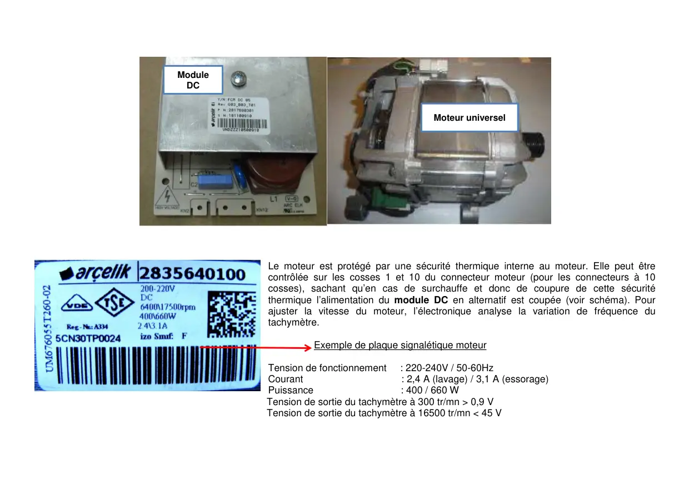
Le moteur est protégé par une sécurité thermique interne au moteur. Elle peut êtrecontrôlée sur les cosses 1 et 10 du connecteur moteur (pour les connecteurs à 10cosses), sachant qu’en cas de surchauffe et donc de coupure de cette sécuritéthermique l’alimentation du module DC en alternatif est coupée (voir schéma). Pourajuster la vitesse du moteur, l’électronique analyse la variation de fréquence dutachymètre.Exemple de plaque signalétique moteurTension de fonctionnement : 220-240V / 50-60HzCourant : 2,4 A (lavage) / 3,1 A (essorage)Puissance : 400 / 660 WTension de sortie du tachymètre à 300 tr/mn > 0,9 VTension de sortie du tachymètre à 16500 tr/mn < 45 VModuleDCMoteur universel
3 / 27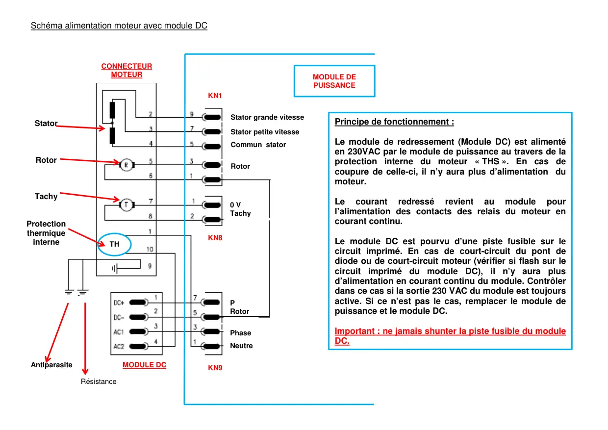
Schéma alimentation moteur avec module DCAntiparasite MODULE DCRésistanceStatorRotorTachyProtectionthermiqueinterneCONNECTEURMOTEURKN1KN8KN9MODULE DEPUISSANCETH0 VTachyPRotorPhaseNeutreStator petite vitesseCommun statorRotorStator grande vitessePrincipe de fonctionnement :Le module de redressement (Module DC) est alimentéen 230VAC par le module de puissance au travers de laprotection interne du moteur « THS ». En cas decoupure de celle-ci, il n’y aura plus d’alimentation dumoteur.Lecourantredressérevientaumodulepourl’alimentation des contacts des relais du moteur encourant continu.Le module DC est pourvu d’une piste fusible sur lecircuit imprimé. En cas de court-circuit du pont dediode ou de court-circuit moteur (vérifier si flash sur lecircuit imprimé du module DC), il n’y aura plusd’alimentation en courant continu du module. Contrôlerdans ce cas si la sortie 230 VAC du module est toujoursactive. Si ce n’est pas le cas, remplacer le module depuissance et le module DC.Important : ne jamais shunter la piste fusible du moduleDC.
4 / 27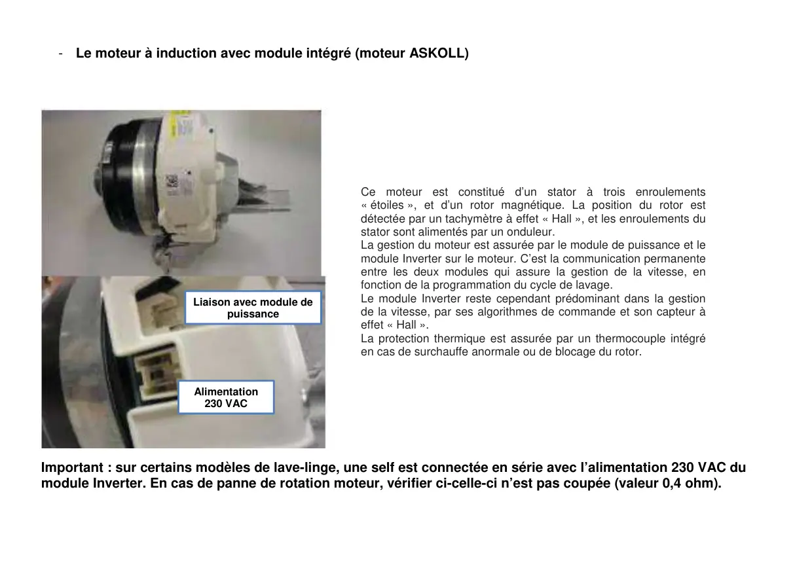
- Le moteur à induction avec module intégré (moteur ASKOLL)Important : sur certains modèles de lave-linge, une self est connectée en série avec l’alimentation 230 VAC dumodule Inverter. En cas de panne de rotation moteur, vérifier ci-celle-ci n’est pas coupée (valeur 0,4 ohm).Ce moteur est constitué d’un stator à trois enroulements« étoiles », et d’un rotor magnétique. La position du rotor estdétectée par un tachymètre à effet « Hall », et les enroulements dustator sont alimentés par un onduleur.La gestion du moteur est assurée par le module de puissance et lemodule Inverter sur le moteur. C’est la communication permanenteentre les deux modules qui assure la gestion de la vitesse, enfonction de la programmation du cycle de lavage.Le module Inverter reste cependant prédominant dans la gestionde la vitesse, par ses algorithmes de commande et son capteur àeffet « Hall ».La protection thermique est assurée par un thermocouple intégréen cas de surchauffe anormale ou de blocage du rotor.Alimentation230 VACLiaison avec module depuissance
5 / 27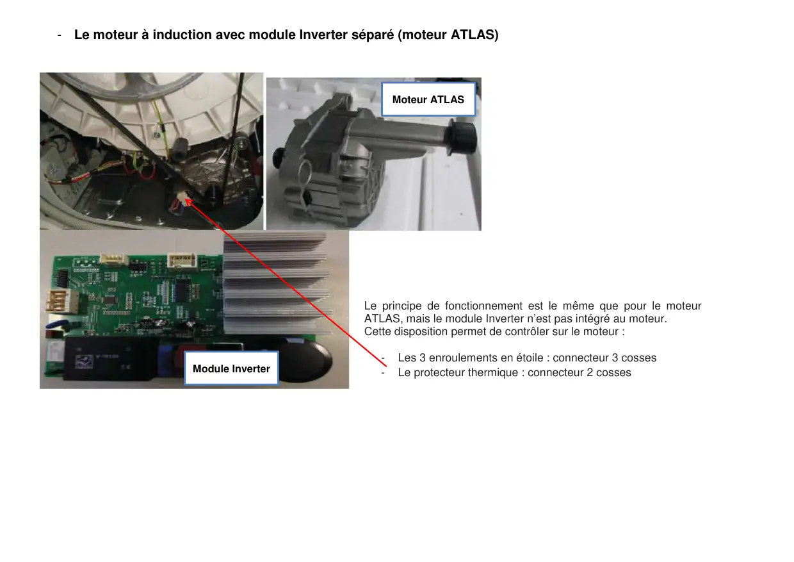
- Le moteur à induction avec module Inverter séparé (moteur ATLAS)Le principe de fonctionnement est le même que pour le moteurATLAS, mais le module Inverter n’est pas intégré au moteur.Cette disposition permet de contrôler sur le moteur :-Les 3 enroulements en étoile : connecteur 3 cosses-Le protecteur thermique : connecteur 2 cossesMoteur ATLASModule Inverter
6 / 27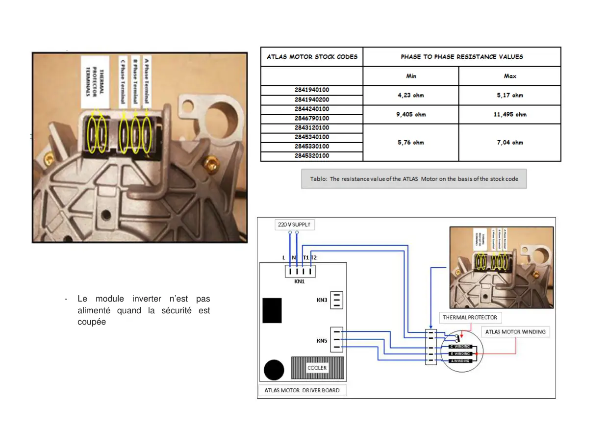
-Le module inverter n’est pasalimenté quand la sécurité estcoupée
7 / 27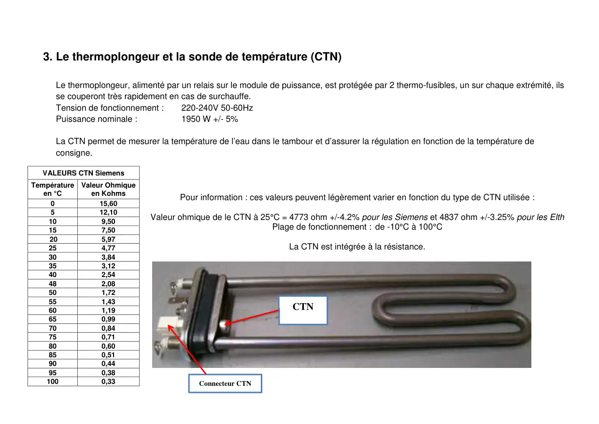
3. Le thermoplongeur et la sonde de température (CTN)Le thermoplongeur, alimenté par un relais sur le module de puissance, est protégée par 2 thermo-fusibles, un sur chaque extrémité, ilsse couperont très rapidement en cas de surchauffe.Tension de fonctionnement :220-240V 50-60HzPuissance nominale :1950 W +/- 5%La CTN permet de mesurer la température de l’eau dans le tambour et d’assurer la régulation en fonction de la température deconsigne.Pour information : ces valeurs peuvent légèrement varier en fonction du type de CTN utilisée :Valeur ohmique de le CTN à 25°C = 4773 ohm +/-4.2% pour les Siemens et 4837 ohm +/-3.25% pour les ElthPlage de fonctionnement : de -10°C à 100°CLa CTN est intégrée à la résistance.VALEURS CTN SiemensTempératureen °CValeur Ohmiqueen Kohms015,60512,10109,50157,50205,97254,77303,84353,12402,54482,08501,72551,43601,19650,99700,84750,71800,60850,51900,44950,381000,33CTNConnecteur CTN
8 / 27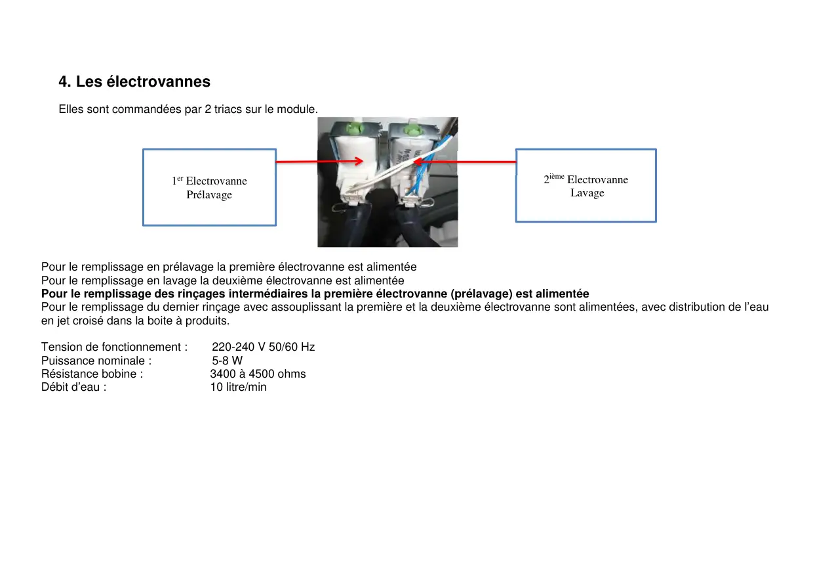
4. Les électrovannesElles sont commandées par 2 triacs sur le module.Pour le remplissage en prélavage la première électrovanne est alimentéePour le remplissage en lavage la deuxième électrovanne est alimentéePour le remplissage des rinçages intermédiaires la première électrovanne (prélavage) est alimentéePour le remplissage du dernier rinçage avec assouplissant la première et la deuxième électrovanne sont alimentées, avec distribution de l’eauen jet croisé dans la boite à produits.Tension de fonctionnement :220-240 V 50/60 HzPuissance nominale :5-8 WRésistance bobine :3400 à 4500 ohmsDébit d’eau :10 litre/min1er ElectrovannePrélavage2ième ElectrovanneLavage
9 / 27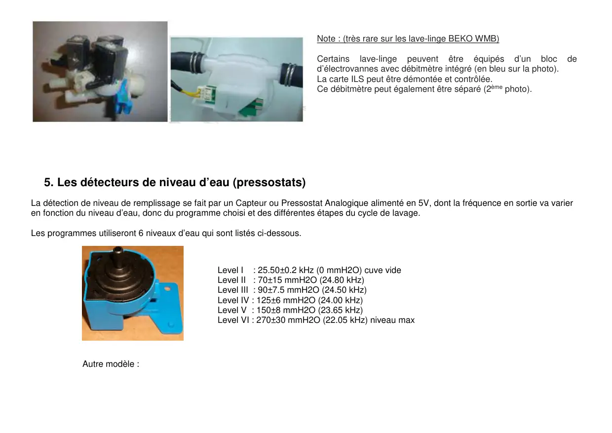
5. Les détecteurs de niveau d’eau (pressostats)La détection de niveau de remplissage se fait par un Capteur ou Pressostat Analogique alimenté en 5V, dont la fréquence en sortie va varieren fonction du niveau d’eau, donc du programme choisi et des différentes étapes du cycle de lavage.Les programmes utiliseront 6 niveaux d’eau qui sont listés ci-dessous.Autre modèle :Level I : 25.50±0.2 kHz (0 mmH2O) cuve videLevel II : 70±15 mmH2O (24.80 kHz)Level III : 90±7.5 mmH2O (24.50 kHz)Level IV : 125±6 mmH2O (24.00 kHz)Level V : 150±8 mmH2O (23.65 kHz)Level VI : 270±30 mmH2O (22.05 kHz) niveau maxNote : (très rare sur les lave-linge BEKO WMB)Certainslave-lingepeuventêtreéquipésd’unblocded’électrovannes avec débitmètre intégré (en bleu sur la photo).La carte ILS peut être démontée et contrôlée.Ce débitmètre peut également être séparé (2ème photo).
10 / 27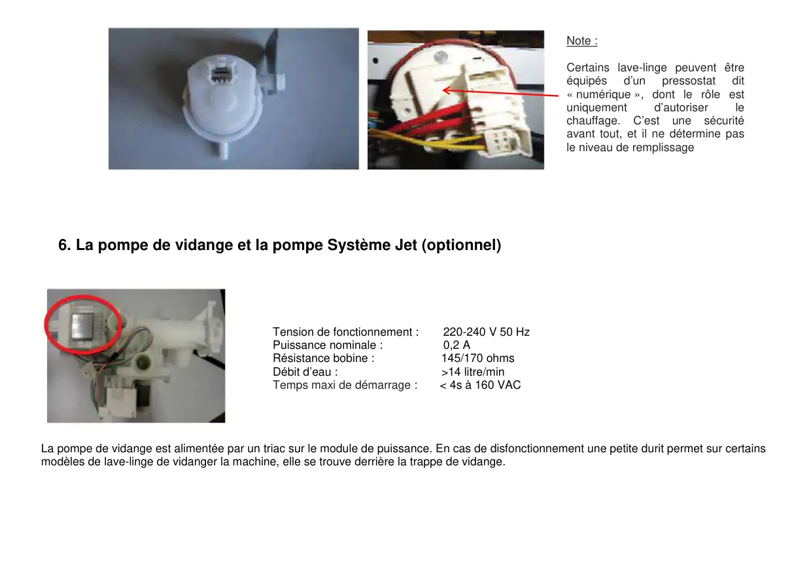
6. La pompe de vidange et la pompe Système Jet (optionnel)La pompe de vidange est alimentée par un triac sur le module de puissance. En cas de disfonctionnement une petite durit permet sur certainsmodèles de lave-linge de vidanger la machine, elle se trouve derrière la trappe de vidange.Note :Certains lave-linge peuvent êtreéquipésd’unpressostatdit« numérique », dont le rôle estuniquementd’autoriserlechauffage.C’estunesécuritéavant tout, et il ne détermine pasle niveau de remplissageTension de fonctionnement :220-240 V 50 HzPuissance nominale :0,2 ARésistance bobine :145/170 ohmsDébit d’eau :>14 litre/minTemps maxi de démarrage : < 4s à 160 VAC
11 / 27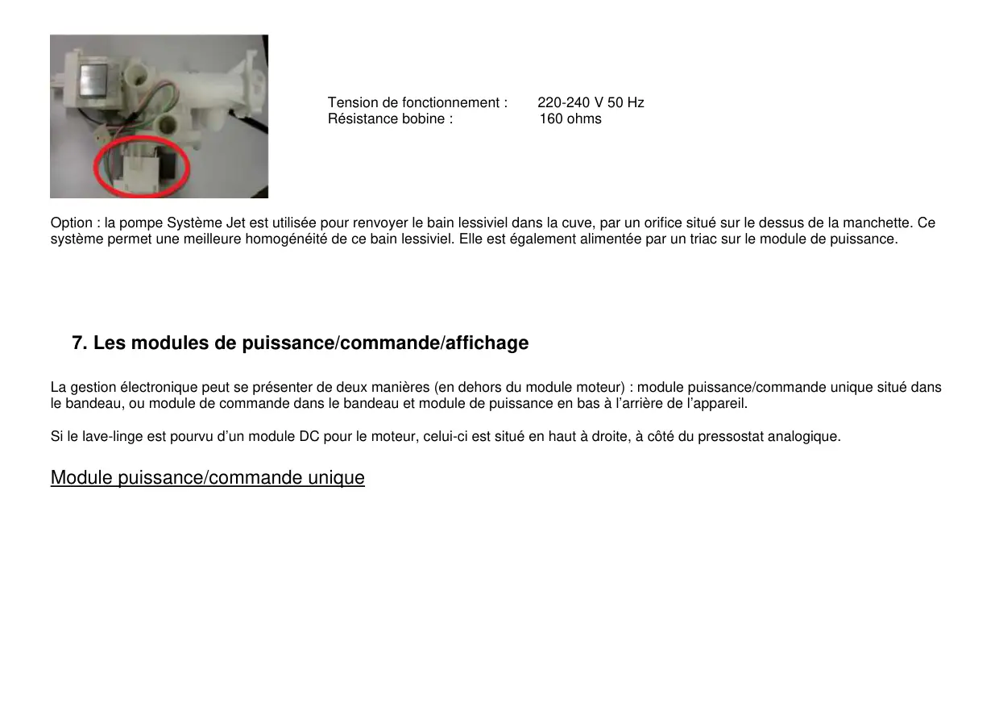
Option : la pompe Système Jet est utilisée pour renvoyer le bain lessiviel dans la cuve, par un orifice situé sur le dessus de la manchette. Cesystème permet une meilleure homogénéité de ce bain lessiviel. Elle est également alimentée par un triac sur le module de puissance.7. Les modules de puissance/commande/affichageLa gestion électronique peut se présenter de deux manières (en dehors du module moteur) : module puissance/commande unique situé dansle bandeau, ou module de commande dans le bandeau et module de puissance en bas à l’arrière de l’appareil.Si le lave-linge est pourvu d’un module DC pour le moteur, celui-ci est situé en haut à droite, à côté du pressostat analogique.Module puissance/commande uniqueTension de fonctionnement :220-240 V 50 HzRésistance bobine :160 ohms
12 / 27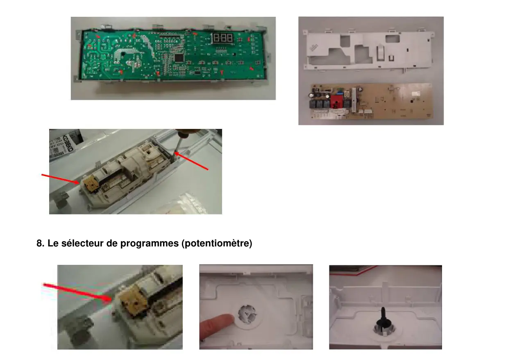
8. Le sélecteur de programmes (potentiomètre)
13 / 27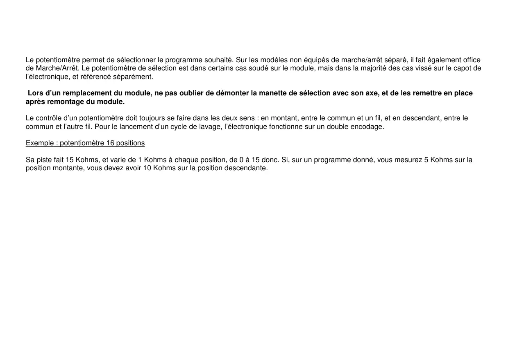
Le potentiomètre permet de sélectionner le programme souhaité. Sur les modèles non équipés de marche/arrêt séparé, il fait également officede Marche/Arrêt. Le potentiomètre de sélection est dans certains cas soudé sur le module, mais dans la majorité des cas vissé sur le capot del’électronique, et référencé séparément.Lors d’un remplacement du module, ne pas oublier de démonter la manette de sélection avec son axe, et de les remettre en placeaprès remontage du module.Le contrôle d’un potentiomètre doit toujours se faire dans les deux sens : en montant, entre le commun et un fil, et en descendant, entre lecommun et l’autre fil. Pour le lancement d’un cycle de lavage, l’électronique fonctionne sur un double encodage.Exemple : potentiomètre 16 positionsSa piste fait 15 Kohms, et varie de 1 Kohms à chaque position, de 0 à 15 donc. Si, sur un programme donné, vous mesurez 5 Kohms sur laposition montante, vous devez avoir 10 Kohms sur la position descendante.
14 / 27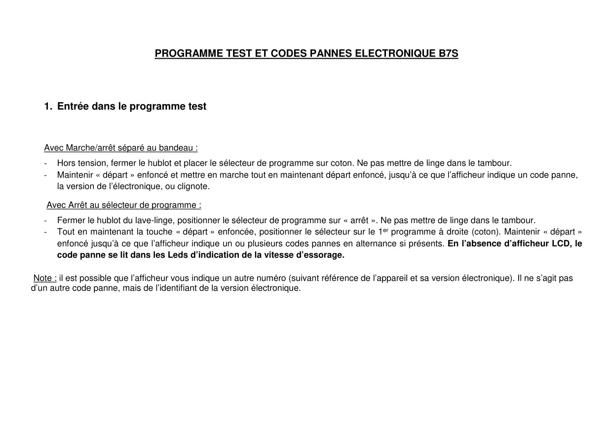
PROGRAMME TEST ET CODES PANNES ELECTRONIQUE B7S1. Entrée dans le programme testAvec Marche/arrêt séparé au bandeau :-Hors tension, fermer le hublot et placer le sélecteur de programme sur coton. Ne pas mettre de linge dans le tambour.-Maintenir « départ » enfoncé et mettre en marche tout en maintenant départ enfoncé, jusqu’à ce que l’afficheur indique un code panne,la version de l’électronique, ou clignote.Avec Arrêt au sélecteur de programme :-Fermer le hublot du lave-linge, positionner le sélecteur de programme sur « arrêt ». Ne pas mettre de linge dans le tambour.-Tout en maintenant la touche « départ » enfoncée, positionner le sélecteur sur le 1er programme à droite (coton). Maintenir « départ »enfoncé jusqu’à ce que l’afficheur indique un ou plusieurs codes pannes en alternance si présents. En l’absence d’afficheur LCD, lecode panne se lit dans les Leds d’indication de la vitesse d’essorage.Note : il est possible que l’afficheur vous indique un autre numéro (suivant référence de l’appareil et sa version électronique). Il ne s’agit pasd’un autre code panne, mais de l’identifiant de la version électronique.
15 / 27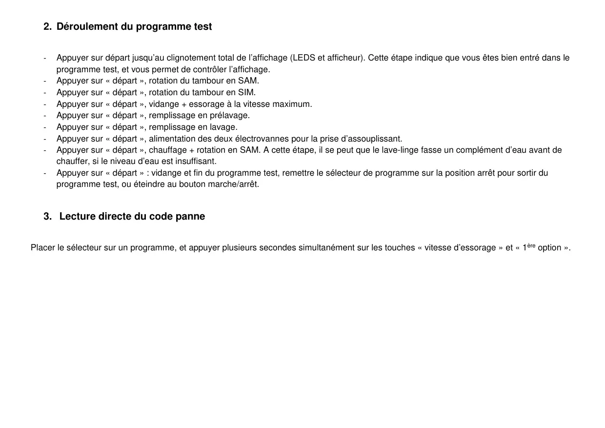
2. Déroulement du programme test-Appuyer sur départ jusqu’au clignotement total de l’affichage (LEDS et afficheur). Cette étape indique que vous êtes bien entré dans leprogramme test, et vous permet de contrôler l’affichage.-Appuyer sur « départ », rotation du tambour en SAM.-Appuyer sur « départ », rotation du tambour en SIM.-Appuyer sur « départ », vidange + essorage à la vitesse maximum.-Appuyer sur « départ », remplissage en prélavage.-Appuyer sur « départ », remplissage en lavage.-Appuyer sur « départ », alimentation des deux électrovannes pour la prise d’assouplissant.-Appuyer sur « départ », chauffage + rotation en SAM. A cette étape, il se peut que le lave-linge fasse un complément d’eau avant dechauffer, si le niveau d’eau est insuffisant.-Appuyer sur « départ » : vidange et fin du programme test, remettre le sélecteur de programme sur la position arrêt pour sortir duprogramme test, ou éteindre au bouton marche/arrêt.3. Lecture directe du code pannePlacer le sélecteur sur un programme, et appuyer plusieurs secondes simultanément sur les touches « vitesse d’essorage » et « 1ère option ».
16 / 27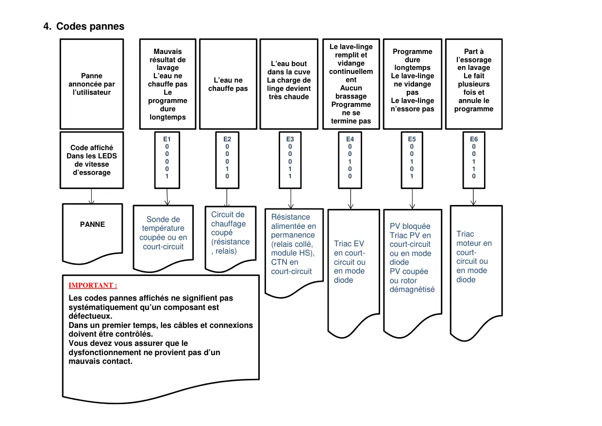
4. Codes pannesPanneannoncée parl’utilisateurCode affichéDans les LEDSde vitessed’essorageL’eau nechauffe pasE200010Mauvaisrésultat delavageL’eau nechauffe pasLeprogrammedurelongtempsE100001L’eau boutdans la cuveLa charge delinge devienttrès chaudeE300011Résistancealimentée enpermanence(relais collé,module HS),CTN encourt-circuitLe lave-lingeremplit etvidangecontinuellementAucunbrassageProgrammene setermine pasE400100Triac EVen court-circuit ouen modediodeProgrammedurelongtempsLe lave-lingene vidangepasLe lave-lingen’essore pasE500101PV bloquéeTriac PV encourt-circuitou en modediodePV coupéeou rotordémagnétiséPart àl’essorageen lavageLe faitplusieursfois etannule leprogrammeE600110Triacmoteur encourt-circuit ouen modediodePANNECircuit dechauffagecoupé(résistance, relais)Sonde detempératurecoupée ou encourt-circuitIMPORTANT :Les codes pannes affichés ne signifient passystématiquement qu’un composant estdéfectueux.Dans un premier temps, les câbles et connexionsdoivent être contrôlés.Vous devez vous assurer que ledysfonctionnement ne provient pas d’unmauvais contact.
17 / 27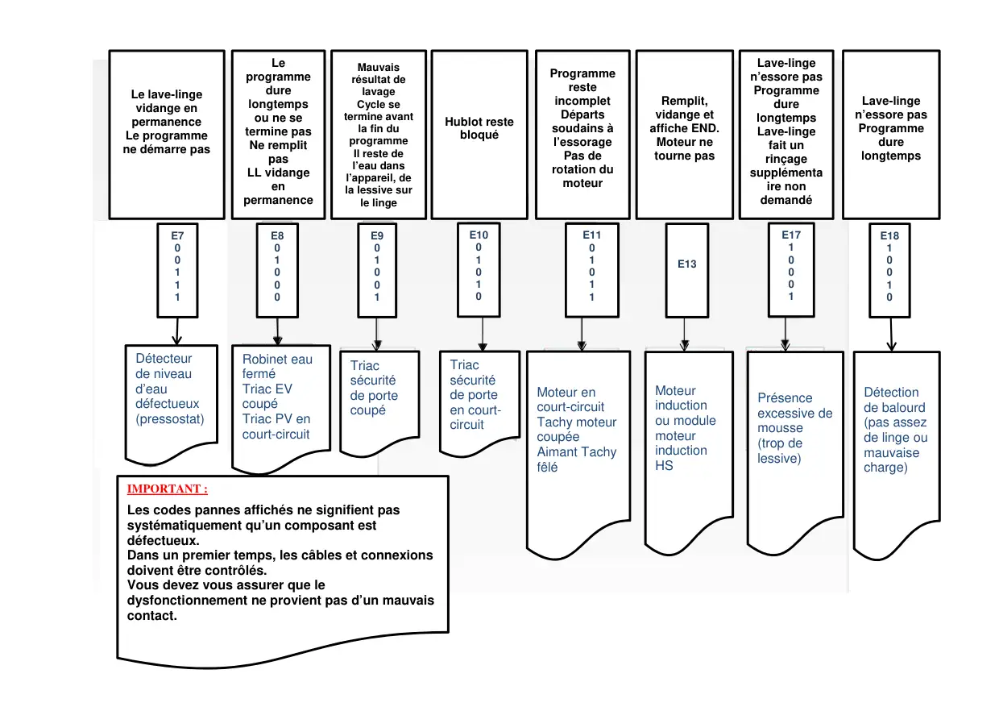
Leprogrammedurelongtempsou ne setermine pasNe remplitpasLL vidangeenpermanenceMauvaisrésultat delavageCycle setermine avantla fin duprogrammeIl reste del’eau dansl’appareil, dela lessive surle lingeHublot restebloquéProgrammeresteincompletDépartssoudains àl’essoragePas derotation dumoteurRemplit,vidange etaffiche END.Moteur netourne pasLave-lingen’essore pasProgrammedurelongtempsLave-lingefait unrinçagesupplémentaire nondemandéE801000E901001Le lave-lingevidange enpermanenceLe programmene démarre pasLave-lingen’essore pasProgrammedurelongtempsPANNEIMPORTANT :Les codes pannes affichés ne signifient passystématiquement qu’un composant estdéfectueux.Dans un premier temps, les câbles et connexionsdoivent être contrôlés.Vous devez vous assurer que ledysfonctionnement ne provient pas d’un mauvaiscontact.Robinet eauferméTriac EVcoupéTriac PV encourt-circuitTriacsécuritéde portecoupéE1001010Triacsécuritéde porteen court-circuitE1101011Moteur encourt-circuitTachy moteurcoupéeAimant TachyfêléE13Moteurinductionou modulemoteurinductionHSE1710001Présenceexcessive demousse(trop delessive)E700111E700111Détecteurde niveaud’eaudéfectueux(pressostat)E1810010Détectionde balourd(pas assezde linge oumauvaisecharge)
18 / 27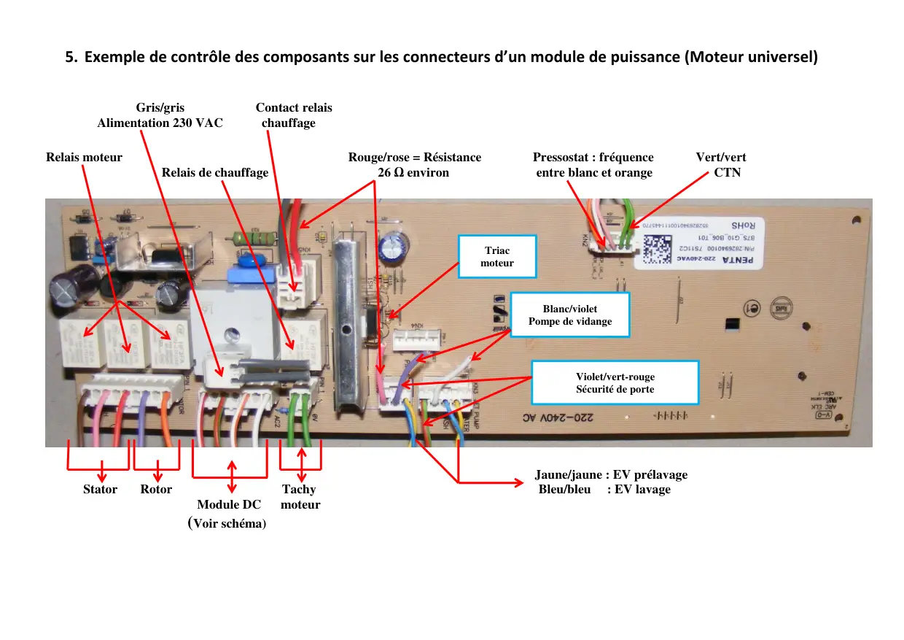
5. Exemple de contrôle des composants sur les connecteurs d’un module de puissance (Moteur universel)Gris/gris Contact relaisAlimentation 230 VAC chauffageRelais moteur Rouge/rose = Résistance Pressostat : fréquence Vert/vertRelais de chauffage 26 Ω environ entre blanc et orange CTNJaune/jaune : EV prélavageStator Rotor Tachy Bleu/bleu : EV lavageModule DC moteur(Voir schéma)TriacmoteurBlanc/violetPompe de vidangeViolet/vert-rougeSécurité de porte
19 / 27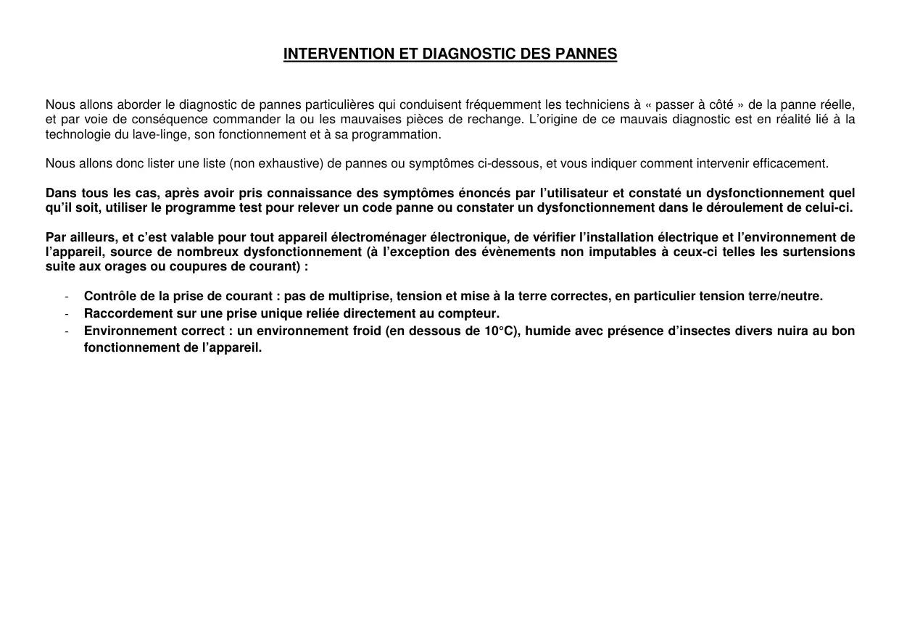
INTERVENTION ET DIAGNOSTIC DES PANNESNous allons aborder le diagnostic de pannes particulières qui conduisent fréquemment les techniciens à « passer à côté » de la panne réelle,et par voie de conséquence commander la ou les mauvaises pièces de rechange. L’origine de ce mauvais diagnostic est en réalité lié à latechnologie du lave-linge, son fonctionnement et à sa programmation.Nous allons donc lister une liste (non exhaustive) de pannes ou symptômes ci-dessous, et vous indiquer comment intervenir efficacement.Dans tous les cas, après avoir pris connaissance des symptômes énoncés par l’utilisateur et constaté un dysfonctionnement quelqu’il soit, utiliser le programme test pour relever un code panne ou constater un dysfonctionnement dans le déroulement de celui-ci.Par ailleurs, et c’est valable pour tout appareil électroménager électronique, de vérifier l’installation électrique et l’environnement del’appareil, source de nombreux dysfonctionnement (à l’exception des évènements non imputables à ceux-ci telles les surtensionssuite aux orages ou coupures de courant) :-Contrôle de la prise de courant : pas de multiprise, tension et mise à la terre correctes, en particulier tension terre/neutre.-Raccordement sur une prise unique reliée directement au compteur.-Environnement correct : un environnement froid (en dessous de 10°C), humide avec présence d’insectes divers nuira au bonfonctionnement de l’appareil.
20 / 27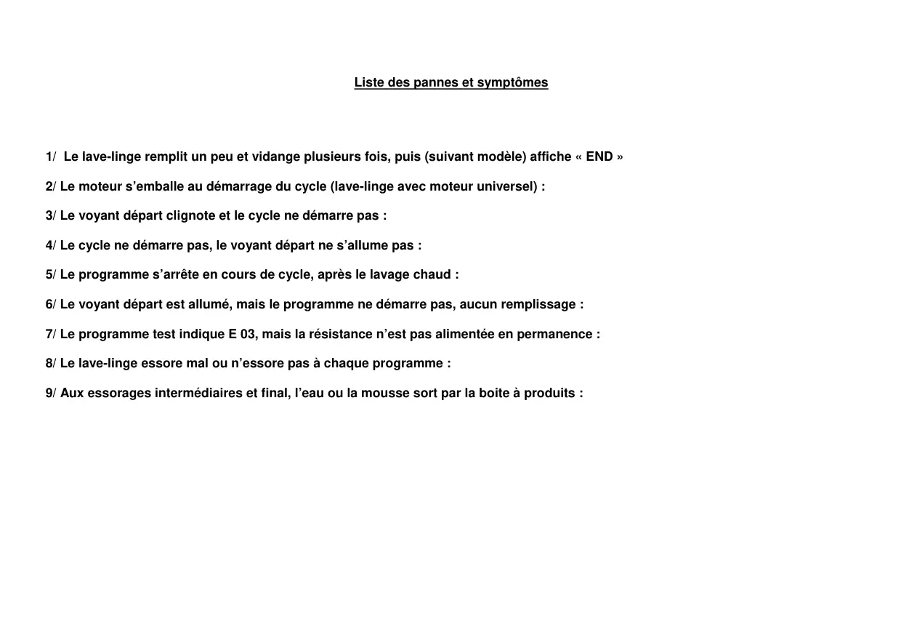
Liste des pannes et symptômes1/ Le lave-linge remplit un peu et vidange plusieurs fois, puis (suivant modèle) affiche « END »2/ Le moteur s’emballe au démarrage du cycle (lave-linge avec moteur universel) :3/ Le voyant départ clignote et le cycle ne démarre pas :4/ Le cycle ne démarre pas, le voyant départ ne s’allume pas :5/ Le programme s’arrête en cours de cycle, après le lavage chaud :6/ Le voyant départ est allumé, mais le programme ne démarre pas, aucun remplissage :7/ Le programme test indique E 03, mais la résistance n’est pas alimentée en permanence :8/ Le lave-linge essore mal ou n’essore pas à chaque programme :9/ Aux essorages intermédiaires et final, l’eau ou la mousse sort par la boite à produits :
21 / 27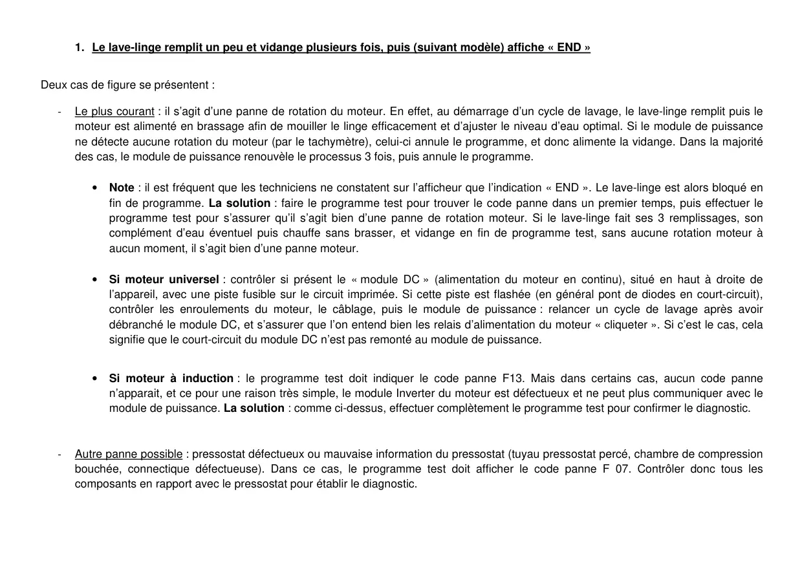
1. Le lave-linge remplit un peu et vidange plusieurs fois, puis (suivant modèle) affiche « END »Deux cas de figure se présentent :-Le plus courant : il s’agit d’une panne de rotation du moteur. En effet, au démarrage d’un cycle de lavage, le lave-linge remplit puis lemoteur est alimenté en brassage afin de mouiller le linge efficacement et d’ajuster le niveau d’eau optimal. Si le module de puissancene détecte aucune rotation du moteur (par le tachymètre), celui-ci annule le programme, et donc alimente la vidange. Dans la majoritédes cas, le module de puissance renouvèle le processus 3 fois, puis annule le programme.• Note : il est fréquent que les techniciens ne constatent sur l’afficheur que l’indication « END ». Le lave-linge est alors bloqué enfin de programme. La solution : faire le programme test pour trouver le code panne dans un premier temps, puis effectuer leprogramme test pour s’assurer qu’il s’agit bien d’une panne de rotation moteur. Si le lave-linge fait ses 3 remplissages, soncomplément d’eau éventuel puis chauffe sans brasser, et vidange en fin de programme test, sans aucune rotation moteur àaucun moment, il s’agit bien d’une panne moteur.• Si moteur universel : contrôler si présent le « module DC » (alimentation du moteur en continu), situé en haut à droite del’appareil, avec une piste fusible sur le circuit imprimée. Si cette piste est flashée (en général pont de diodes en court-circuit),contrôler les enroulements du moteur, le câblage, puis le module de puissance : relancer un cycle de lavage après avoirdébranché le module DC, et s’assurer que l’on entend bien les relais d’alimentation du moteur « cliqueter ». Si c’est le cas, celasignifie que le court-circuit du module DC n’est pas remonté au module de puissance.• Si moteur à induction : le programme test doit indiquer le code panne F13. Mais dans certains cas, aucun code pannen’apparait, et ce pour une raison très simple, le module Inverter du moteur est défectueux et ne peut plus communiquer avec lemodule de puissance. La solution : comme ci-dessus, effectuer complètement le programme test pour confirmer le diagnostic.-Autre panne possible : pressostat défectueux ou mauvaise information du pressostat (tuyau pressostat percé, chambre de compressionbouchée, connectique défectueuse). Dans ce cas, le programme test doit afficher le code panne F 07. Contrôler donc tous lescomposants en rapport avec le pressostat pour établir le diagnostic.
22 / 27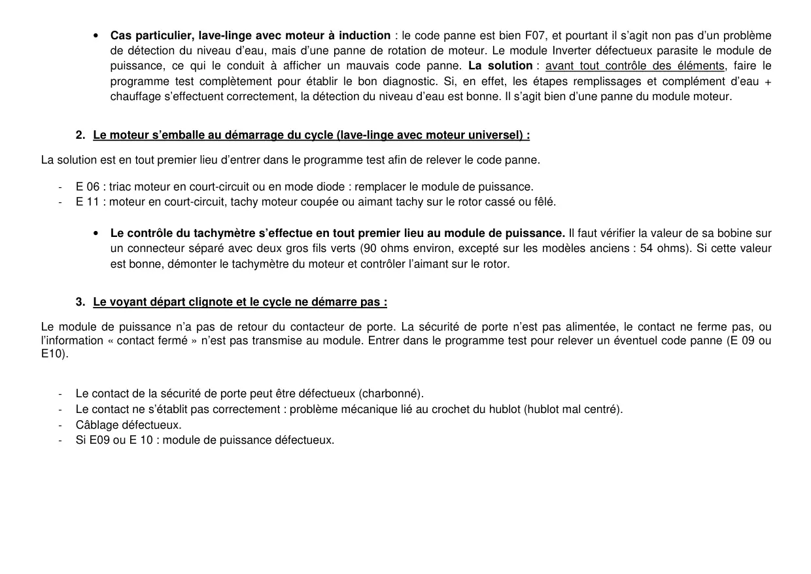
• Cas particulier, lave-linge avec moteur à induction : le code panne est bien F07, et pourtant il s’agit non pas d’un problèmede détection du niveau d’eau, mais d’une panne de rotation de moteur. Le module Inverter défectueux parasite le module depuissance, ce qui le conduit à afficher un mauvais code panne. La solution : avant tout contrôle des éléments, faire leprogramme test complètement pour établir le bon diagnostic. Si, en effet, les étapes remplissages et complément d’eau +chauffage s’effectuent correctement, la détection du niveau d’eau est bonne. Il s’agit bien d’une panne du module moteur.2. Le moteur s’emballe au démarrage du cycle (lave-linge avec moteur universel) :La solution est en tout premier lieu d’entrer dans le programme test afin de relever le code panne.-E 06 : triac moteur en court-circuit ou en mode diode : remplacer le module de puissance.-E 11 : moteur en court-circuit, tachy moteur coupée ou aimant tachy sur le rotor cassé ou fêlé.• Le contrôle du tachymètre s’effectue en tout premier lieu au module de puissance. Il faut vérifier la valeur de sa bobine surun connecteur séparé avec deux gros fils verts (90 ohms environ, excepté sur les modèles anciens : 54 ohms). Si cette valeurest bonne, démonter le tachymètre du moteur et contrôler l’aimant sur le rotor.3. Le voyant départ clignote et le cycle ne démarre pas :Le module de puissance n’a pas de retour du contacteur de porte. La sécurité de porte n’est pas alimentée, le contact ne ferme pas, oul’information « contact fermé » n’est pas transmise au module. Entrer dans le programme test pour relever un éventuel code panne (E 09 ouE10).-Le contact de la sécurité de porte peut être défectueux (charbonné).-Le contact ne s’établit pas correctement : problème mécanique lié au crochet du hublot (hublot mal centré).-Câblage défectueux.-Si E09 ou E 10 : module de puissance défectueux.
23 / 27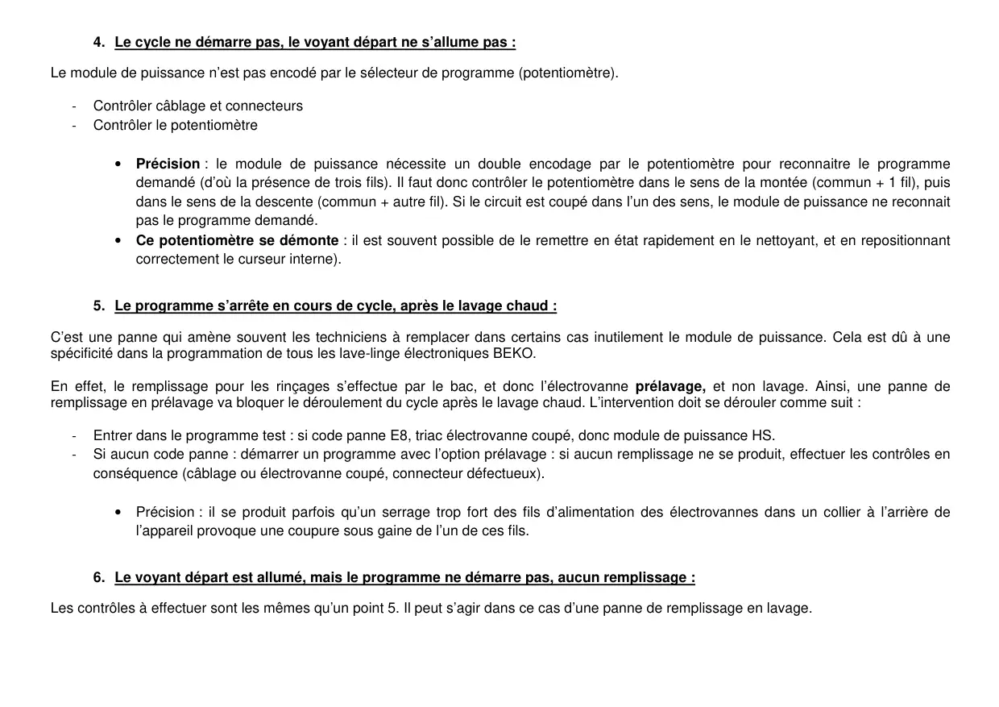
4. Le cycle ne démarre pas, le voyant départ ne s’allume pas :Le module de puissance n’est pas encodé par le sélecteur de programme (potentiomètre).-Contrôler câblage et connecteurs-Contrôler le potentiomètre• Précision : le module de puissance nécessite un double encodage par le potentiomètre pour reconnaitre le programmedemandé (d’où la présence de trois fils). Il faut donc contrôler le potentiomètre dans le sens de la montée (commun + 1 fil), puisdans le sens de la descente (commun + autre fil). Si le circuit est coupé dans l’un des sens, le module de puissance ne reconnaitpas le programme demandé.• Ce potentiomètre se démonte : il est souvent possible de le remettre en état rapidement en le nettoyant, et en repositionnantcorrectement le curseur interne).5. Le programme s’arrête en cours de cycle, après le lavage chaud :C’est une panne qui amène souvent les techniciens à remplacer dans certains cas inutilement le module de puissance. Cela est dû à unespécificité dans la programmation de tous les lave-linge électroniques BEKO.En effet, le remplissage pour les rinçages s’effectue par le bac, et donc l’électrovanne prélavage, et non lavage. Ainsi, une panne deremplissage en prélavage va bloquer le déroulement du cycle après le lavage chaud. L’intervention doit se dérouler comme suit :-Entrer dans le programme test : si code panne E8, triac électrovanne coupé, donc module de puissance HS.-Si aucun code panne : démarrer un programme avec l’option prélavage : si aucun remplissage ne se produit, effectuer les contrôles enconséquence (câblage ou électrovanne coupé, connecteur défectueux).• Précision : il se produit parfois qu’un serrage trop fort des fils d’alimentation des électrovannes dans un collier à l’arrière del’appareil provoque une coupure sous gaine de l’un de ces fils.6. Le voyant départ est allumé, mais le programme ne démarre pas, aucun remplissage :Les contrôles à effectuer sont les mêmes qu’un point 5. Il peut s’agir dans ce cas d’une panne de remplissage en lavage.
24 / 27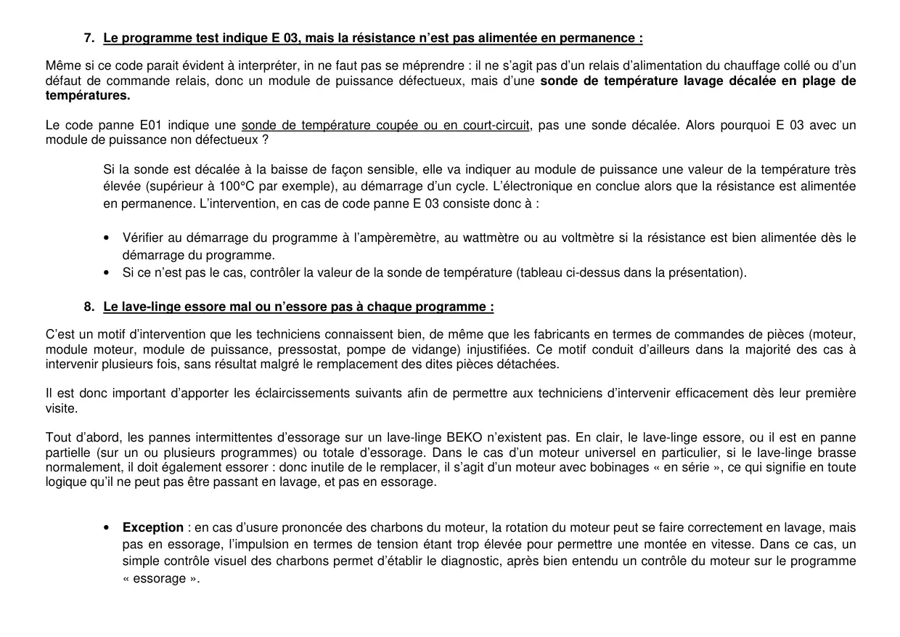
7. Le programme test indique E 03, mais la résistance n’est pas alimentée en permanence :Même si ce code parait évident à interpréter, in ne faut pas se méprendre : il ne s’agit pas d’un relais d’alimentation du chauffage collé ou d’undéfaut de commande relais, donc un module de puissance défectueux, mais d’une sonde de température lavage décalée en plage detempératures.Le code panne E01 indique une sonde de température coupée ou en court-circuit, pas une sonde décalée. Alors pourquoi E 03 avec unmodule de puissance non défectueux ?Si la sonde est décalée à la baisse de façon sensible, elle va indiquer au module de puissance une valeur de la température trèsélevée (supérieur à 100°C par exemple), au démarrage d’un cycle. L’électronique en conclue alors que la résistance est alimentéeen permanence. L’intervention, en cas de code panne E 03 consiste donc à :• Vérifier au démarrage du programme à l’ampèremètre, au wattmètre ou au voltmètre si la résistance est bien alimentée dès ledémarrage du programme.• Si ce n’est pas le cas, contrôler la valeur de la sonde de température (tableau ci-dessus dans la présentation).8. Le lave-linge essore mal ou n’essore pas à chaque programme :C’est un motif d’intervention que les techniciens connaissent bien, de même que les fabricants en termes de commandes de pièces (moteur,module moteur, module de puissance, pressostat, pompe de vidange) injustifiées. Ce motif conduit d’ailleurs dans la majorité des cas àintervenir plusieurs fois, sans résultat malgré le remplacement des dites pièces détachées.Il est donc important d’apporter les éclaircissements suivants afin de permettre aux techniciens d’intervenir efficacement dès leur premièrevisite.Tout d’abord, les pannes intermittentes d’essorage sur un lave-linge BEKO n’existent pas. En clair, le lave-linge essore, ou il est en pannepartielle (sur un ou plusieurs programmes) ou totale d’essorage. Dans le cas d’un moteur universel en particulier, si le lave-linge brassenormalement, il doit également essorer : donc inutile de le remplacer, il s’agit d’un moteur avec bobinages « en série », ce qui signifie en toutelogique qu’il ne peut pas être passant en lavage, et pas en essorage.• Exception : en cas d’usure prononcée des charbons du moteur, la rotation du moteur peut se faire correctement en lavage, maispas en essorage, l’impulsion en termes de tension étant trop élevée pour permettre une montée en vitesse. Dans ce cas, unsimple contrôle visuel des charbons permet d’établir le diagnostic, après bien entendu un contrôle du moteur sur le programme« essorage ».
25 / 27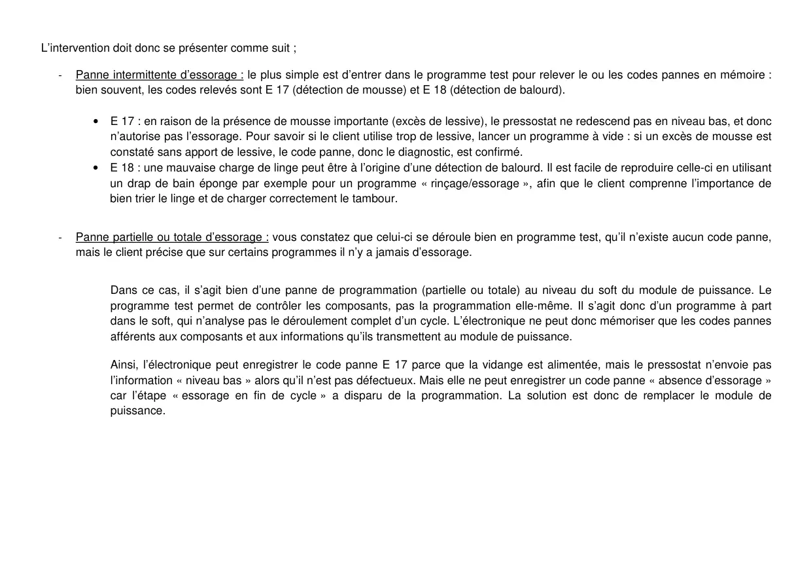
L’intervention doit donc se présenter comme suit ;-Panne intermittente d’essorage : le plus simple est d’entrer dans le programme test pour relever le ou les codes pannes en mémoire :bien souvent, les codes relevés sont E 17 (détection de mousse) et E 18 (détection de balourd).• E 17 : en raison de la présence de mousse importante (excès de lessive), le pressostat ne redescend pas en niveau bas, et doncn’autorise pas l’essorage. Pour savoir si le client utilise trop de lessive, lancer un programme à vide : si un excès de mousse estconstaté sans apport de lessive, le code panne, donc le diagnostic, est confirmé.• E 18 : une mauvaise charge de linge peut être à l’origine d’une détection de balourd. Il est facile de reproduire celle-ci en utilisantun drap de bain éponge par exemple pour un programme « rinçage/essorage », afin que le client comprenne l’importance debien trier le linge et de charger correctement le tambour.-Panne partielle ou totale d’essorage : vous constatez que celui-ci se déroule bien en programme test, qu’il n’existe aucun code panne,mais le client précise que sur certains programmes il n’y a jamais d’essorage.Dans ce cas, il s’agit bien d’une panne de programmation (partielle ou totale) au niveau du soft du module de puissance. Leprogramme test permet de contrôler les composants, pas la programmation elle-même. Il s’agit donc d’un programme à partdans le soft, qui n’analyse pas le déroulement complet d’un cycle. L’électronique ne peut donc mémoriser que les codes pannesafférents aux composants et aux informations qu’ils transmettent au module de puissance.Ainsi, l’électronique peut enregistrer le code panne E 17 parce que la vidange est alimentée, mais le pressostat n’envoie pasl’information « niveau bas » alors qu’il n’est pas défectueux. Mais elle ne peut enregistrer un code panne « absence d’essorage »car l’étape « essorage en fin de cycle » a disparu de la programmation. La solution est donc de remplacer le module depuissance.
26 / 27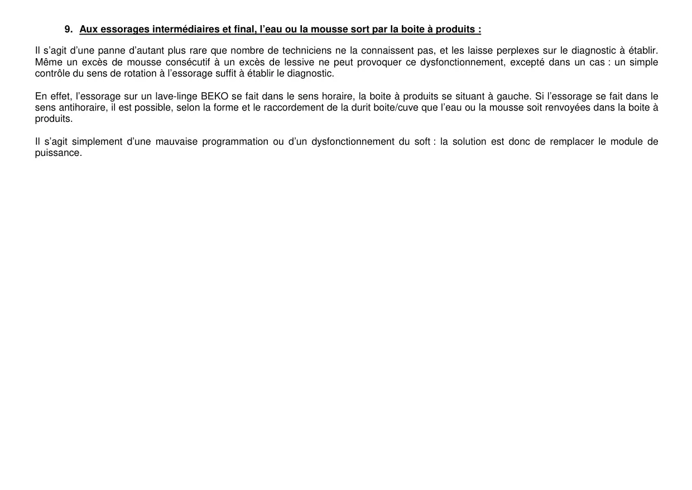
9. Aux essorages intermédiaires et final, l’eau ou la mousse sort par la boite à produits :Il s’agit d’une panne d’autant plus rare que nombre de techniciens ne la connaissent pas, et les laisse perplexes sur le diagnostic à établir.Même un excès de mousse consécutif à un excès de lessive ne peut provoquer ce dysfonctionnement, excepté dans un cas : un simplecontrôle du sens de rotation à l’essorage suffit à établir le diagnostic.En effet, l’essorage sur un lave-linge BEKO se fait dans le sens horaire, la boite à produits se situant à gauche. Si l’essorage se fait dans lesens antihoraire, il est possible, selon la forme et le raccordement de la durit boite/cuve que l’eau ou la mousse soit renvoyées dans la boite àproduits.Il s’agit simplement d’une mauvaise programmation ou d’un dysfonctionnement du soft : la solution est donc de remplacer le module depuissance.
27 / 27